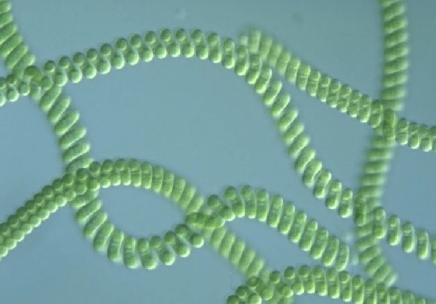
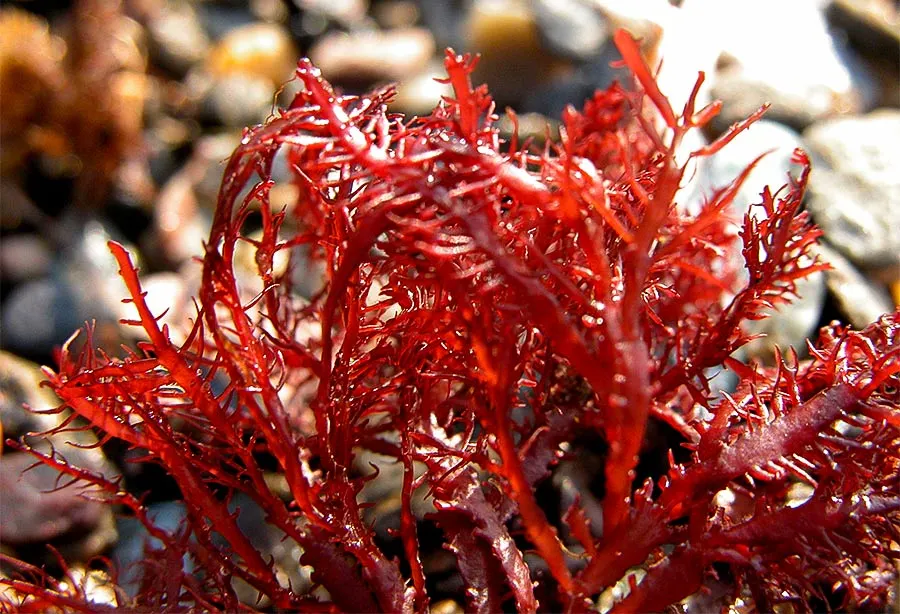

ძირითადი ფაქტები
- მიეკუთვნება ყავისფერი წყალმცენარეების (Phaeophyceae) ჯგუფს.
- სიგრძე შეიძლება 60 მეტრსაც მიაღწიოს, რაც მას წყალქვეშა „ტყის“ მსგავს სტრუქტურას აძლევს.
- ქმნის კელპის ტყეებს, რომლებიც მნიშვნელოვან ეკოსისტემას წარმოადგენენ — იქ მრავალი თევზი, უხერხემლო და ზღვის
ძუძუმწოვარი ბინადრობს.
- სწრაფად იზრდება — დღეში 30–60 სმ-მდე.
- გამოიყენება როგორც საკვები (ზღვის კომბოსტოს მსგავსად), ასევე ალგინატის წყარო, რომელიც გამოიყენება საკვებ და
ფარმაცევტულ მრეწველობაში.
სპირულინა მიკრო წყალმცენარეა:

რა არის: მიკროსკოპული ლურჯ-მწვანე ორგანიზმი (ციანობაქტერია), რომელიც ფოტოსინთეზს ასრულებს.
სად იზრდება ბუნებრივად: ტუტე და თბილ ტბებში (აფრიკა, მექსიკა, აზია).
როგორ მიიღება დღეს: უმეტესად ზრდიან სპეციალურ აუზებსა და ბიორეაქტორებში, ფილტრავენ და აშრობენ.
რისთვის გამოიყენება: საკვებად (სუპერდანამატი), იმუნიტეტის გასაძლიერებლად, ენერგიისთვის, კოსმეტიკაში და
ცხოველების საკვებში.
რას შეიცავს ყველაზე მნიშვნელოვანი:
✅ ცილები (მაღალი რაოდენობით)
✅ რკინა, მაგნიუმი, კალციუმი, იოდი
✅ ვიტამინები (B ჯგუფი, E)
✅ ანტიოქსიდანტი — ფიკოციანინი
✅ ქლოროფილი
✅ ომეგა-6 (GLA)
გელდიუმი:

გელიდიუმი როგორც წითელი წყალმცენარე, მდიდარია ბიოლოგიურად სასარგებლო ნივთიერებებით:
ძირითადი შემადგენლობა
🧪 აგარი (Agar-agar) — მთავარი ნივთიერება, რის გამოც გელიდიუმი ფასობს
🌿 პოლისაქარიდები — გელის წარმომქმნელი ნაერთები
🧬 ცილები — მცირე, მაგრამ მნიშვნელოვანი რაოდენობით
🧂 იოდი
🧂 კალციუმი
🧂 მაგნიუმი
🧂 რკინა
🧂 ფოსფორი
პიგმენტები (ფერი და ფუნქცია)
🔴 ფიკოერითრინი — აძლევს წითელ ფერს
🔵 ფიკოციანინი
🟢 ქლოროფილი
ვიტამინები
B ჯგუფი
ვიტამინი C
ვიტამინი E (მცირე რაოდენობით)